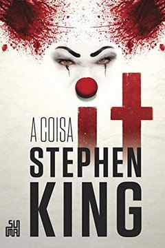
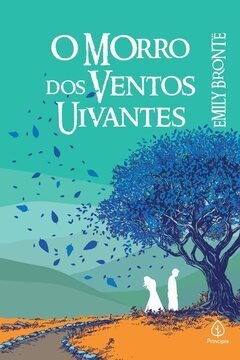
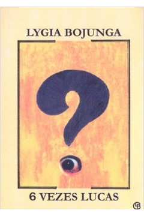
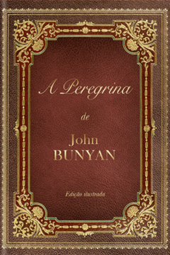
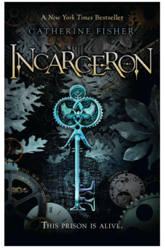
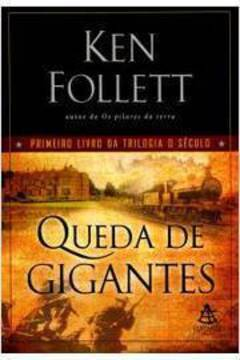
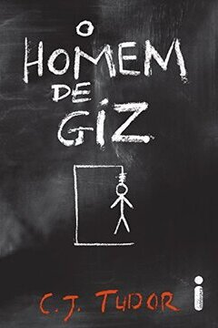

| Janeiro |
Guerra dos tronos (vl.1) - Autor: George R. R. Martin |
|
| Fevereiro |
It, a coisa - Autor: Stephen King |
 |
| Março |
Morro dos ventos uivantes - Autor: Emily Bronte |
 |
| Abril |
6 Vezes Lucas - Autor: Lygia Bojunga |
 |
| Maio |
Corte de espinhos e rosas - Autor: Sarah J. Maas |
|
| Junho |
A peregrina - Autor: John Bunyan |
 |
| Julho |
Jogos Vorazes (vl.1) - Autor: Suzanne Collins |
|
| Agosto |
Incarceron - Autor: Catherine Fisher |
 |
| Setembro |
Harry Potter e o prisioneiro de Azkaban - Autor: J. K. Rowling |
|
| Outubro |
Queda de gigantes (vl.1) - Autor: Ken Follet |
 |
| Novembro |
O homem de giz - Autor: C.J. Tudor |
 |
| Dezembro |
O menino do pijama listrado - Autor: John Boyne |
|